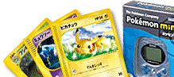
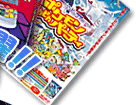

子どもから大人まで、みんなが大好きなポケモン。今回はＮ．Ｏ．Ｍがポケモンの最新ニュースをゲットしてきました。
夏の映画に新作カードやイベント情報、最新グッズの情報までバッチリ仕入れてきましたよ。
ポケモンファンのみなさん、見逃さないでネ！
2001, 2002 Pokemon / Nintendo.
1995-2001. Nintendo / Creatures Inc. / GAME FREAK inc.
Tetris :
Elorg 1987-2002
2002 Pokemon / Nintendo.
2002 Pokemon
1995-2002. Nintendo / Creatures Inc. / GAME FREAK inc.
Nintendo / CREATURES / GAME FREAK / TV TOKYO・SHO-PRO・JR KIKAKU.
2002 ピカチュウプロジェクト
JUMP >>>
5月号のサイトマップへ
BACK >>>
N.O.Mのバックナンバーページへ